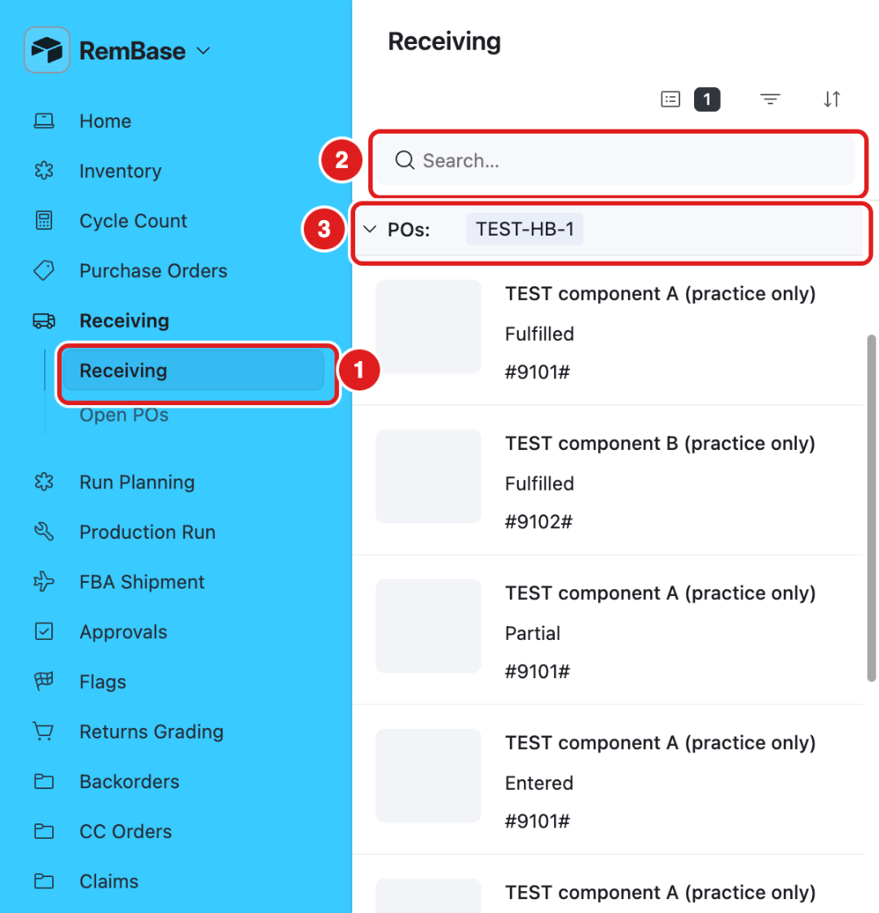
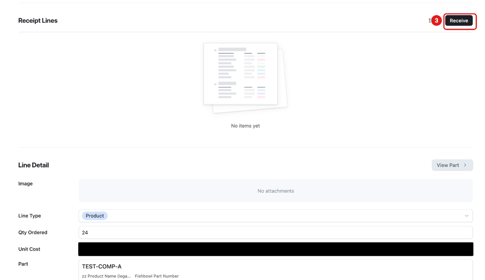
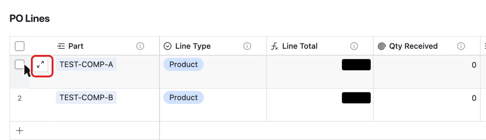
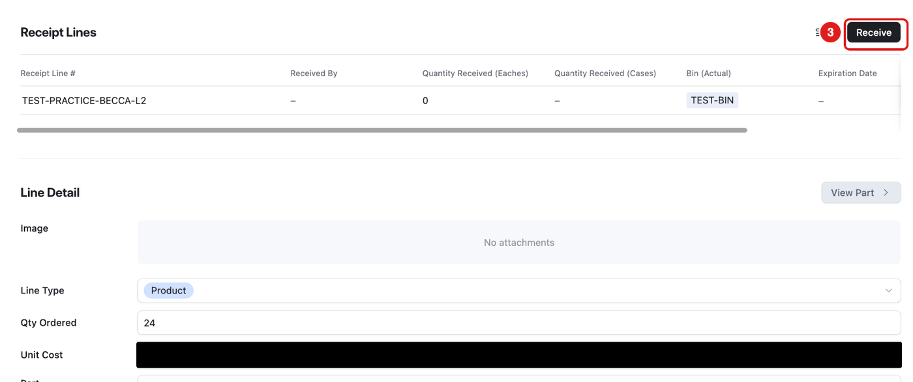
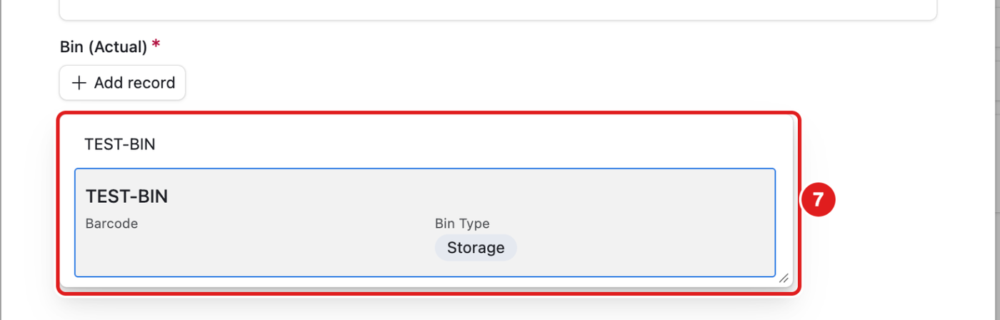
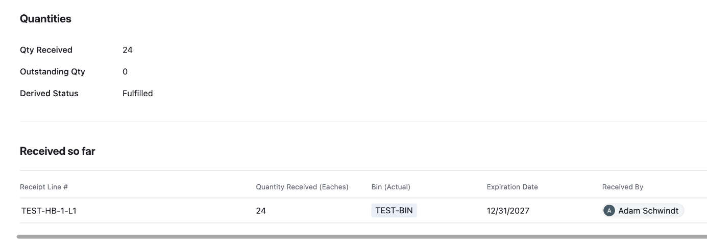
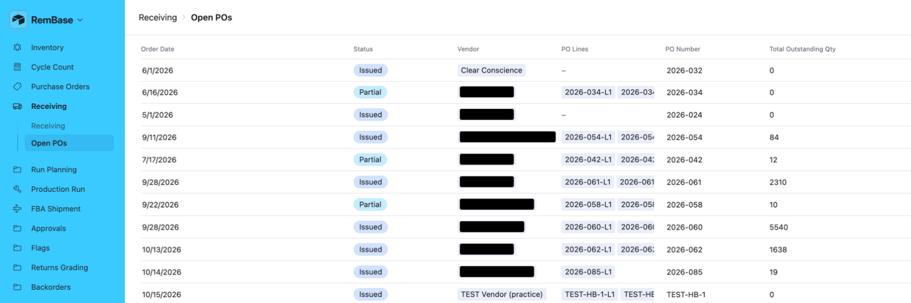

What this page is for
When boxes arrive from a vendor, you receive them. Receiving puts the stock in a bin with its expiration date.
Who uses it: Chad and Sabith.
Before December 1, receive real deliveries in Fishbowl. In RemBase, practice only on your own practice PO (TEST-PRACTICE-BECCA, -CHAD or -SABITH). The pictures use TEST-HB-1.
The Receiving page

- Click Receiving in the menu (1).
- Use Search (2) to find a PO number or a part.
Each row is one PO line that still has something to receive. Click a row to see what was ordered and what has arrived. When everything on a line has arrived, the line leaves this list.
During practice this list shows only TEST lines. Real parts are hidden on purpose.
Until December 1, a receipt on a real part is blocked: the receipt line says Blocked – not posted, nothing is added to stock, and a Flag goes to Becca. Practice only on TEST POs.
Task: receive a PO line
There are three ways to open the Receive form. All three open the same form. Way 1 is the easiest.
Way 1 – from the Receiving page
Click Receiving in the menu. Click your line (for practice: your own practice PO).
Scroll down to Received so far. Click Receive (3).


Way 2 – from Purchase Orders
Click Purchase Orders in the menu. Click the PO number.
In PO Lines, point at the line. Click the small expand icon (⤢) at the left of the row. A plain click on the row only selects a box, it does not open the line.

Next to Receipt Lines, click Receive (3).



Way 3 – from Open POs
- Click Receiving → Open POs. Click the PO.
- Then do Way 2, step 2 and step 3: point at the line, click ⤢, then click Receive.
Then fill in the Receive Shipment form
Fill in the boxes:

- 4 – Received By: choose your name.
- 5 – Quantity Received (Units): how many single units arrived. Use this for most receipts.
- Quantity Received (Cases): only for full cases. Leave it empty if you typed Units.
- 6 – Expiration Date: the date on the box. Always fill it in if the box has a date.
- Quantity Damaged: how many are broken. Leave it empty if none.
- Discrepancy Notes: write what is wrong, if anything.
- 7 – Bin (Actual): the bin where you put the stock. It is required. For practice: TEST-BIN.
To choose the bin, click + Add record, type the bin name, and click the bin.

Check every box again.
Click Post Receipt (8).

What you should see
The receipt appears under Received so far (and under Receipt Lines on the PO line):

- Qty Received goes up.
- Outstanding Qty goes down.
- Derived Status says Partial or Fulfilled.
- Received so far lists each receipt with the bin, the expiration date, who received it, and Received At: the date and time in Eastern time.
The stock is now on the part page in Inventory.
Open POs
Receiving → Open POs lists POs that are not finished, with how much is still outstanding. Click a PO to open it, then receive a line as in Way 2.

Common mistakes
- Typing cases in the Units box. Units = single items. Cases = full cases.
- No expiration date. Without a date the system cannot use the oldest stock first.
- Wrong bin. Choose the bin where the stock really is.
- Receiving twice. Look at Received so far before you receive.
- Saving a receipt with no quantity. RemBase raises a flag. Enter the receipt again with the right quantity.
- A wrong receipt. Do not try to fix it yourself. Ask Becca. (Reverse this receipt is on the Do not press list.)